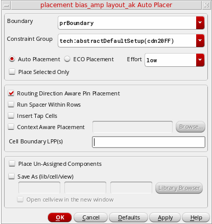
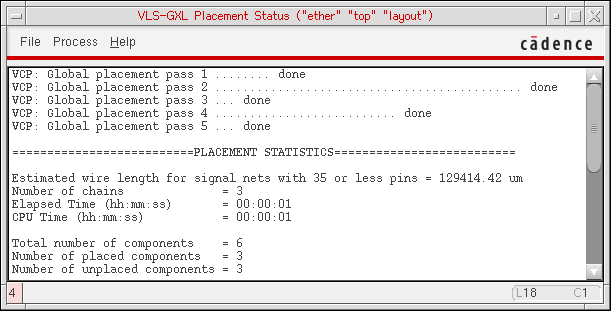

4
Running the Placer
This chapter describes the Virtuoso® Custom Digital Placer’s placement capability.
This chapter covers the following topics:
- Prerequisites to Placement
- Running the Placer
- Context-Aware Placement
- Placement of Multi-Voltage Cells (ICADVM20.1 Only)
- Support for Virtual Hierarchies in the Design Planner Environment (ICADVM20.1 Only)
- Running the Placer Using SKILL
You launch the Virtuoso® Custom Digital Placer from the Auto Placer form. The placer can run in foreground, background, or Load Balancing Service (LBS) mode, reporting its status in the Placement Status window.
After the placer finishes, the placed cellview appears if you are updating the source view with the placed view, or if you are creating a new view and chose the Open Window option in the Auto Placer form.
After placement, you can iteratively
- Lock the position of components whose placement is good.
- Refine the constraints on other components to better guide the placer.
- Rerun the placer as needed to improve the placement results.
Prerequisites to Placement
- Set the required environment variables before launching the Cadence software. For more information, see Setting Up Layout XL for Placement.
- If you want to place only some of the components, select the components you want to place in the layout window, and check the Place Selected Only option.
Running the Placer
To perform placement of the selected components:
-
Choose Place – Custom Digital – Placer. The Auto Placer form is displayed.
 - Select the placement options that you want to specify.
- Select a suitable option from the Effort drop-down list. The run time of the placer and quality of results differ based on the effort chosen. The selected Effort level determines the number of passes of the placer. An increased number passes results in better (optimized) placement results. For example, the High effort setting generates better placement results than Low. However the run time of the placer differs based on the effort. For example, the placer takes more time to run when Effort set to High than when set to Low.
-
To save the placed cellview with a different view name,
-
Check the Save As option. Type in the Library, Cell, and View names for the new cellview. By default the view name is layout.plc. You can change the library or cell name, or browse to choose the cellview name.
- Check the Open cellview in the new window option to open the placed cellview in a new session window.
-
Check the Save As option. Type in the Library, Cell, and View names for the new cellview. By default the view name is layout.plc. You can change the library or cell name, or browse to choose the cellview name.
-
Click OK or Apply.
The placer initializes and the Placement Status window appears.
You can specify the level of detail that appears in the status window by setting the vcpVerboseLevelenvironmental variable. The text columns in the form do not align if a variable font is used. Use a fixed text font instead.
The placer moves pins that were not assigned to placement information inside the design boundary and aligns to any boundary edge.
(ICADVM20.1 Only) The placer honors the explicitColoredPurposes environment variable. When set, only the shapes on the specified purposes are considered by the placer for snapping instances.
Context-Aware Placement
At advanced nodes, the key placement goal is to achieve maximum compaction. But, achieving maximum compaction at such small geometries poses its own set of challenges, such as litho and stress effects. To overcome such issues and to achieve context-aware placement at small nodes, the Virtuoso Custom Digital Placer honors the LEF58_EDGETYPE and LEF58_CELLEDGESPACINGTABLE LEF5.8 constraints. For more information, see Planning Placement of Standard Cells.
To enable context-aware placement, the Auto Placer form provides a Context Aware Placemen t option. The option can also be controlled by using the contextAwarePlacement environment variable. However, for the option to be available in the form, the advanced node, VISNG200 license, should be available.
For the standard-cell placement to be context-aware, the cell edge and spacing constraints should be defined in the technology LEF and the macro LEF and the Context Aware Placement option on the Auto Placer form should be selected. Alternatively, if the constraint information is not defined in the LEF files, an XML file, which contains the required constraint information, should be provided.
A sample of the XML file carrying the context information is given below.
For information about providing the XML file using the Auto Placer form, see Auto Placer.
However, if the XML file specified through the form or by using the environment variable is invalid, or the file is not provided, the placer reads the technology and the macro LEF for relevant placement information and places the standard cells according to the specified spacing constraints. If the spacing information is also unavailable in the LEF files, the placer issues an error message indicating context-aware placement cannot be performed. For more information, see the Auto Placer form.
To achieve optimum compaction, the placer might run several iterations before generating the placement results. Although the placer honors the spacing constraints that are defined, if any spacing constraints are violated, the markers indicating the violations are displayed in the
Resolving Spacing Violations During Placement
To achieve context-aware placement, the placer uses the edge type and acceptable spacing information available in the Edge Spacing Table.
Let us consider an example to see how the placer can use the cell edge spacing information, as given in the table below, to resolve any spacing violations and to generate optimal placement results.
| Edge Type 1 | Edge Type 2 | Spacing (in micron) |
Let us consider cells A and B, as given in the figure below, are placed such that edge type 2 of cell A is placed adjacent to edge type 1 of cell B. Since the edge types 1 and 2 have a spacing constraint of 0.5 micron, as defined in the cell edge spacing table above, a spacing violation is generated if the cells are placed adjacent to each other. To fix the violation, the placer might flip, move, or flip and move cell B such that edge type 2 of both the cells is placed without generating any spacing violations.
Placement of Multi-Voltage Cells (ICADVM20.1 Only)
Standard cells can be characterized into different voltage (VT) cells based on the VT layer shape that they include. At advanced nodes, Virtuoso Custom Digital Placer supports placement of multi-voltage cells.
Note:-
To specify VT layers, use the multiVTLayers environment variable. The default value is
(VTS_N VTL_N VTUL_N). -
To enable placement of multi-voltage cells, set the multiVTPlacement environment variable to
t.
-
To specify VT layers, use the multiVTLayers environment variable. The default value is
During placement of multi-voltage cells, Virtuoso Custom Digital Placer honors the following multi-voltage placement rules:
-
The same VT-type standard cells must maintain a minimum width that equals four times the poly pitch value. This value can be specified using the minVTLength environment variable. The default value is 0.
228. - For standard cells with different VT types that are placed next to each other, an appropriate gap should be maintained to ensure that the minimum width rule is followed.
Support for Virtual Hierarchies in the Design Planner Environment (ICADVM20.1 Only)
Virtuoso® Design Planner is a connectivity-based tool in Layout EXL that supports automatic placement and congestion analysis capabilities. In the Design Planner environment, Placement Planning lets you create rows in the PR boundary, cluster boundary, and virtual hierarchy boundary (area boundary).
For more information about virtual hierarchies, see Virtuoso Design Planner User Guide.
Running the Placer Using SKILL
You can also use the
For information on all the placer SKILL Functions, see
Return to top